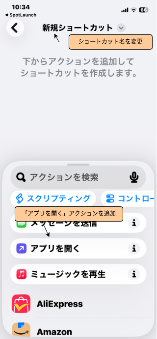
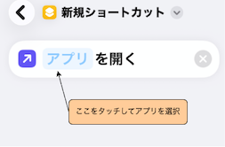

SPOTLAUNCH
使い方・サポート
SpotLaunchは、行きつけのお店に着いてこのアプリを開くと、そのお店で使える会員アプリや支払いアプリを 自動的にポップアップ表示する、位置情報ベースのアプリランチャーです。行きつけの場所に自分の好きなアプリを 自由に紐づけられるほか、利用頻度の高いアプリをお気に入りに登録しておくこともできます。
01基本の使い方
お気に入り(トップ画面)
お気に入り登録したアプリがアイコンで並びます。タップして起動、長押ししてドラッグすると並び替えられます。お気に入りのアプリは「アプリ一覧」から追加できます。
アプリ一覧
右上の「アプリ一覧」から、対応している全アプリをカテゴリ別に確認できます。アプリを起動、星マークでお気に入り登録、位置ピンのアイコンをタップするとそのアプリを現在地に紐づけられます。このリストに表示されているのは本アプリから直接呼び出すことが可能なアプリで、それ以外は下記の追加機能で好きなアプリを追加できます。
現在地に追加
位置ピンのアイコンをタップすると確認ダイアログが表示され、「追加」を選ぶとそのアプリが現在地に登録されます。これにより、この場所で本アプリを起動した時に自動的にポップアップ表示されるようになります。
近くの店舗ポップアップ
アプリを起動すると、現在地から半径20m以内で使用できるアプリの一覧が自動的にポップアップ表示されます。タップするとアプリが起動し、ゴミ箱アイコンをタップすると今後このリストに含まれないようにできます。主要なスーパーやコンビニなどの位置情報はあらかじめ登録されていますが、それ以外の場所も「現在地に追加」から自由に紐づけ可能です。
「ここで使えるアプリ」ボタン
画面下部のボタンをタップすると、現在地から半径50m以内で使用できるアプリを一覧表示します。
アプリ一覧にないアプリを追加
「アプリ一覧」右上の「＋」から、一覧にないアプリを自分で追加できます。Appleのショートカットアプリと連携する方法と、URLスキームを使って追加する方法があります。カスタムURLスキームは一般的に公開されていない情報のため、わからない場合はショートカットアプリを使う方法をおすすめします。
02ショートカットを使ったアプリの追加方法
「アプリを追加」画面で「ショートカットアプリを開いて作成」をタップしてAppleのショートカットアプリが開いたら、「アプリを開く」をタップします。 続けて「新規ショートカット」というタイトル部分をタップし、「名称変更」を選択してショートカットに適切な名前をつけます。(SpotLaunchには、この名前で表示されます)

「アプリを開く」が表示されている行の「アプリ」の部分をタップすると、iPhoneにインストールされているアプリが一覧表示されるので、登録したいアプリを選択した後、画面左上の「＜」ボタンを押します。 もし登録したいアプリが表示されていない場合は、そのアプリがインストールされていないので、先にインストールしてください。

以上でショートカットの作成は完了です。SpotLaunchアプリに戻り、「ショートカット名」欄に先ほどのショートカット名を入力してから「追加」ボタンを押すと、アプリが追加されます。 追加したアプリは、アプリ一覧の「自分で追加したアプリ」欄に表示され、本アプリから起動できるようになります。お気に入りに登録したり、お好きな場所に紐づけることも可能です。
03お問い合わせ
操作方法がわからない場合や、不具合のご報告、ご意見・ご要望は、下記のメールアドレスまでお気軽にご連絡ください。